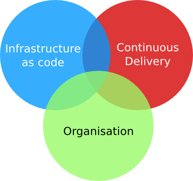
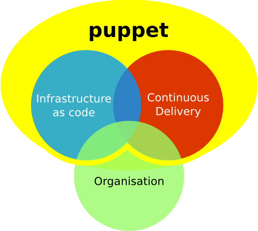

Mise en Production
Continue
avec Puppet
9h30 - 12h30 - Salle Louis Armstrong CD
Mise En Production Continue avec Puppet


Sondage
Combien de temps pour déployer une seule ligne de code en production ?
- plus d'un an
- 6 mois
- 1 mois
- 2 semaines
- tous les jours
- à chaque commit !
Devops ? 1/2
Devops ? 2/2
Qu'est-ce-que Puppet ?
Un programme de gestion de configuration système d'un ensemble de machines.
À quoi ça ressemble ? 1/4
Structure de répertoires
/etc/puppet
|-- manifests
| `-- site.pp => Point d'entrée
|-- modules
| `-- MODULE_NAME
| |-- manifests
| | `-- init.pp => Classe par défaut
| |-- files
| `-- lib
`-- templates
À quoi ça ressemble ? 2/4
site.pp
import "nodes"
import "defines"
Exec { path => "/usr/bin:/usr/sbin/:/bin:/sbin" }
case $operatingsystem {
Ubuntu: {
Package { provider => aptitude }
}
Redhat: {
Package { provider => up2date }
}
Debian: {
Package { provider => aptitude }
}
default: {
Package { provider => aptitude }
}
}
À quoi ça ressemble ? 3/4
nodes.pp
class urbandivesnap-default-node {
include base-module
}
class urbandivesnap-FO-Cache-V3-node {
include ud-base-sec-module
include ud-fo-cachev3-module
}
class urbandivesnap-FO-Solr-node {
include ud-fo-solr-module
}
node snap-ud-fo-cache-001 {
include urbandivesnap-default-node
include urbandivesnap-FO-Cache-V3-node
}
node snap-ud-fo-solr-001, snap-ud-fo-solr-002 {
include urbandivesnap-default-node
include urbandivesnap-FO-Solr-node
}
À quoi ça ressemble ? 4/4
init.pp
class ud-fo-solr-module {
file { "/etc/sysctl.conf":
ensure => present,
owner => root,
group => root,
mode => 644,
source => "puppet:///ud-fo-solr-module/sysctl.conf",
}
exec { "Reload /etc/sysctl.conf":
command => "/sbin/sysctl -p /etc/sysctl.conf",
refreshonly => true,
subscribe => File["/etc/sysctl.conf"],
require => File["/etc/sysctl.conf"],
}
package { "s3cmd":
ensure => installed,
require => Exec['Reload apt'],
}
}
Rejoignez-nous !
image © Michael Jastremski for openphoto.net CC:Attribution-ShareAlikeInstallation
Tout est là !
- VirtualBox
- Vagrant
- Vagrantfile
- Vagrant base box
Tutorial Puppet 1/5
Lancer puppetmaster
Tutorial Puppet 2/5
Déployer un fichier
Tutorial Puppet 3/5
Créer un utilisateur et un groupe
Tutorial Puppet 4/5
Installer un paquet
Tutorial Puppet 5/5
Gestion d'un service
Constitution des équipes 1/3
 Photo credit: Arthur40A / Foter.com / CC BY-SA
Photo credit: Arthur40A / Foter.com / CC BY-SA
Une équipe = un data center !
Constitution des équipes 2/3
Une équipe, c'est au total :
- 2 Go
- 4 CPU
- 5 machines
et au maximum :
- 10 machines
Constitution des équipes 3/3
Répartition des roles
- puppetmaster
- java-blue-1
- java-green-1
- web-blue-2
- web-green-2
- db-blue-3
- db-green-3
- mongo-blue-4
- mongo-green-4